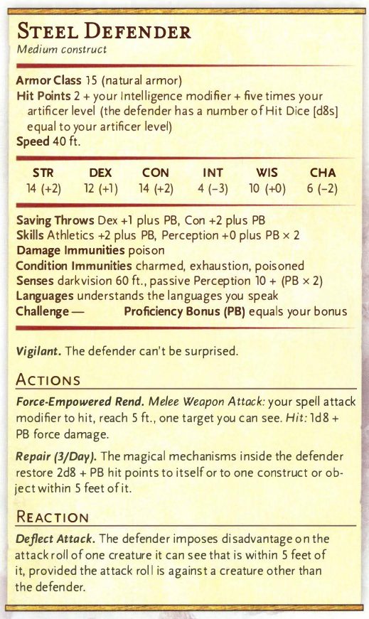

STEEL-DEFENDER

Mending heals 2d6
HOMUNCULUS-SERVANT
Mending heals 2d6
FIRE BOLT
Evocation cantrip
Casting Time: 1 action Range: 120 feet
Components: V, S Duration: Instantaneous
You hurl a mote of fire at a creature or object within
range. Make a ranged spell attack against the
target. On a hit, the target takes 1d10 fire damage. A
flammable object hit by this spell ignites if it isn't being
worn or carried.
This spell's damage increases by 1d10 when you reach
5th level (2d10), 11th level (3d10), and 17th level (4d10).
MENDING
Transmutation cantrip
Casting Time: 1 minute Range: touch
Components: V, S, M (two lodestones) Duration: Instantaneous
This spell repairs a single break or tear in an object
you touch, such as a broken chain link, two halves of
a broken key, a torn cloak, or a leaking wineskin. As
long as the break or tear is no larger than 1 foot in
any dimension, you mend it, leaving no trace of the
former damage.
This spell can physically repair a magic item
or construct, but the spell can't restore magic to
such an object.
ABSORB ELEMENTS
1st-level abjuration
Casting Time: 1 reaction, which you take when you take acid, cold, fire, lightning, or thunder damage
Range: self Components: S Duration: 1 round
The spell captures some of the incoming energy, lessening
its effect on you and storing it for your next melee
attack. You have resistance to the triggering damage
type until the start of your next turn. Also, the first time
you hit with a melee attack on your next turn, the target
takes an extra 1d6 da mage of the triggering type, and
the spell ends.
When you cast this spell using a
spell slot of 2nd level or higher, the extra damage increases
by 1d6 for each slot level above 1st.
CURE WOUNDS
1st-level evocation
Casting Time: 1 action Range: touch
Components: V, S Duration: Instantaneous
A creature you touch regains a number of hit points
equal to 1d8 + your spellcasting ability modifier. This
spell has no effect on undead or constructs.
When you cast this spell using a
spell slot of 2nd level or higher, the healing increases by
1d8 for each slot level above 1st.
DETECT MAGIC
1st-level divination (ritual)
Casting Time: 1 action Range: self
Components: V, S Duration: Duration: concentration, up to 10 minutes
For the duration, you sense the presence of magic within 30 feet of you. If you sense magic in this way, you can
use your action to see a faint aura around any visible creature or object in the area that bears magic, and you
learn its school of magic, if any.
The spell can penetrate most barriers, but it is blocked by 1 foot of stone, 1 inch of common metal, a thin sheet
of lead, or 3 feet of wood or dirt.
FEATHER FALL
1st-level transmutation
Casting Time: 1 reaction, which you take when you or a creature within 60 feet of you falls
Range: 60 feet Components: V, M (a small feather or piece of down)
Duration: 1 minute
Choose up to five falling creatures within range. A
falling creature's rate of descent slows to 60 feet per
round until the spell ends. If the creature lands before
the spell ends, it takes no falling damage and can land
on its feet, and the spell ends for that creature.
HEROISM
1st-level enchantment
Casting Time: 1 action Range: touch
Components: concentration, up to 1 minute
A willing creature you touch is imbued with bravery. Until the spell ends, the creature is immune to being
frightened and gains temporary hit points equal to your spellcasting ability modifier at the start of each of its turns.
When the spell ends, the target loses any remaining temporary hit points from this spell.
SHIELD
1st-level abjuration
Casting Time: 1 reaction, which you take when you are hit by an attack or targeted by the magic missile spell
Range: self Components: V, S
Duration: 1 round
An invisible barrier of magical force appears and protects you. Until the start of your next turn, you have a +5 bonus to AC,
including against the triggering attack, and you take no damage from magic missile.
SNARE
1st-level abjuration
Casting Time: 1 minute Range: touch
Components: S, M (25 feet of rope, which the spell consumes) Duration: 8 hours
As you cast this spell, you use the rope to create a circle
with a 5-foot radius on the ground or the floor. When
you finish casting, the rope disappears and the circle
becomes a magic trap.
This trap is nearly invisible, requiring a successful
Intelligence (Investigation) check against your spell save
DC to be discerned.
The trap triggers when a Small, Medium, or Large
creature moves onto the ground or the floor in the
spell's radius. That creature must succeed on a Dexterity
saving throw or be magically hoisted into the air,
leaving it hanging upside down 3 feet above the ground
or the floor. The creature is restrained there until the
spell ends.
A restrained creature can make a Dexterity saving
throw at the end of each of its turns, ending the effect on
itself on a success. Alternatively, the creature or someone
else who can reach it can use an action to make an
Intelligence (Arcana) check against your spell save DC.
On a success, the restrained effect ends.
After the trap is triggered, the spell ends when no
creature is restrained by it.
TASHA'S CAUSTIC BREW
1st-level evocation
Casting Time: 1 action Range: self (30-foot line)
Components: V, S, M (a bit of rotten food) Duration: Concentration, up to 1 minute
A stream of acid emanates from you in a line 30 feet
long and 5 feet wide in a direction you choose. Each
creature in the line must succeed on a Dexterity
saving throw or be covered in acid for the spell's
duration or until a creature uses its action to scrape
or wash the acid off itself or another creature. A
creature covered in the acid takes 2d4 acid damage
at start of each of its turns.
When you cast this spell using a spell slot of 2nd level or higher, the damage increases
by 2d4 for each slot level above 1st.